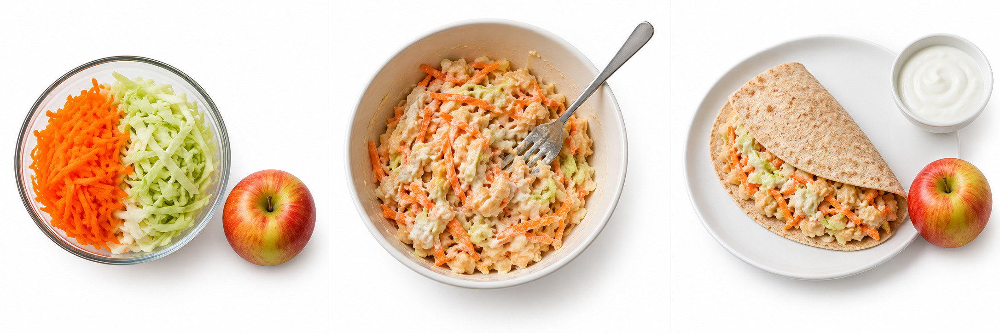

Design and Technology · LAUNCH · Spring 1 Week 2
Prepare our planned dish safely
Thursday 14 January 2027 · P1 · 40 minutes
Weekly outcome: FOODWISE: prepare a 2-3 step dish safely.
I can follow my checked plan to prepare a simple dish and show safe working.
Today I can
- I can complete the agreed preparation steps with the support I need.
- I can show hygiene and safe tool use before, during and after making.
- I can keep an honest record of my finished plate and the support used.
Use your checked Week 1 plan. Record your actual dish and support in your book or private evidence record. You may speak, sign, draw or direct an adult.
Theme: Resilience & Change. Tasting is optional. Practical preparation starts only after the adult’s GO. Plan and rehearse in any language.
prepare
Get food ready using the agreed method.
hygiene
Actions that keep food and equipment clean and safe.
ready to eat
Food that needs no further cooking before eating.
cross-contact
An allergen gets into another food through contact.
chill
Keep food cold at the agreed safe temperature.
evidence
A truthful record of what actually happened.
Our checked plan
0–5 minutesFind your Week 1 plan and agreed method.
Wait for the adult’s GO before food is issued.
Wash and dry your hands.
HOLD until the adult has completed the private checks and gives GO.
Before ingredients are issued, use the school allergy policy and individual healthcare/access records, complete the blank teacher note privately, check every actual label and substitution, and confirm trained supervision, emergency arrangements, handwashing, safe tools, clean preparation and chilled storage. Unknown or incomplete checks mean HOLD. Do not infer no allergies from a blank record.
No kitchen or safe food facilities
Use the same planned cold wrap with adult-supplied washed, pre-cut vegetables and cooked ready-to-eat beans. Pupils mash, mix, fill and fold using a fork, bowl and clean work surface. No heat or knife is needed. Staff must still approve handwashing with potable water, cleaning, food-safe preparation, labels, allergy controls, supervision and verified cold storage. A checked insulated cold container may be used only if it holds food at 0–5°C. If any requirement cannot be met, use the materials-free simulation and keep practical competence pending.
Materials-free simulation
With no safe food facilities, food or equipment, rehearse with empty hands or pictures. The pupil explains or directs the three steps and names a safety action at each point. Record this as planning or simulation, not preparation. Mark the practical and any plate photo pending. Rebook the practical when the adult can meet all safety requirements.
What to say and do
Complete the private records, label and facilities checks before the lesson and keep the allergy note blank in the public master. Read each pupil’s plan and confirm any substitution. Give GO only for a cleared practical; unknown checks mean HOLD. Pupils wash and dry hands. Use the cold assembly fallback if safe facilities are approved, otherwise simulate. No one must disclose personal health information to the group.
Check and response
Ask: What must happen before ingredients are issued? Expect the adult’s completed safety and allergy checks, then GO. An unchecked or blank note is HOLD, not clearance.
No kitchen route
Use the same planned cold wrap with adult-supplied washed, pre-cut vegetables and cooked ready-to-eat beans. Pupils mash, mix, fill and fold using a fork, bowl and clean work surface. No heat or knife is needed. Staff must still approve handwashing with potable water, cleaning, food-safe preparation, labels, allergy controls, supervision and verified cold storage. A checked insulated cold container may be used only if it holds food at 0–5°C. If any requirement cannot be met, use the materials-free simulation and keep practical competence pending.
Materials-free fallback
With no safe food facilities, food or equipment, rehearse with empty hands or pictures. The pupil explains or directs the three steps and names a safety action at each point. Record this as planning or simulation, not preparation. Mark the practical and any plate photo pending. Rebook the practical when the adult can meet all safety requirements.
The three steps
5–8 minutesPut prepare, mix and assemble in order.
Match the pictures to your own checked plan.
Name the cooked beans we may use.

These are the Week 1 model quantities for one person. Use the pupil’s actual approved plan and any checked substitution. Individual needs and appetite vary. One 60 g yoghurt portion is split: about 20 g in the filling and 40 g alongside.
Model ingredients
- Wholemeal wrap 1 wrap
- Ready-to-eat cooked beans 80 g drained
- Carrot 60 g
- Cabbage 40 g
- Plain yoghurt 60 g
- Apple 1 small
What to say and do
Use the original model picture strip and the step card. State that the illustrations are teaching models, not photographs of pupil work or proof of quantities. The written plan controls actual amounts. Use only cooked beans labelled ready to eat. Never use dry or merely soaked beans in this cold dish.
Check and response
Correct order is prepare, mix, assemble. If a pupil cannot explain the order, use one picture at a time and repeat the first step together.
No kitchen route
Use the same planned cold wrap with adult-supplied washed, pre-cut vegetables and cooked ready-to-eat beans. Pupils mash, mix, fill and fold using a fork, bowl and clean work surface. No heat or knife is needed. Staff must still approve handwashing with potable water, cleaning, food-safe preparation, labels, allergy controls, supervision and verified cold storage. A checked insulated cold container may be used only if it holds food at 0–5°C. If any requirement cannot be met, use the materials-free simulation and keep practical competence pending.
Materials-free fallback
With no safe food facilities, food or equipment, rehearse with empty hands or pictures. The pupil explains or directs the three steps and names a safety action at each point. Record this as planning or simulation, not preparation. Mark the practical and any plate photo pending. Rebook the practical when the adult can meet all safety requirements.
A safe demonstration
8–13 minutesWatch the adult show the agreed tool routine.
See how one yoghurt portion is split.
Ask for a prepared ingredient or a different approved tool if needed.
Step by step
1 Prepare
After the adult’s checks, wash hands with soap and water and dry them. Wash the carrot, cabbage and apple. Grate the carrot and finely slice the cabbage with adult-approved tools and supervision. Use prepared vegetables if agreed.
2 Mix
Mash 80 g of cooked beans labelled ready to eat with a fork. Mix in about 20 g from the single 60 g yoghurt portion. Add the carrot and cabbage. An adult opens tins and removes sharp lids.
3 Assemble
Put the filling on the wholemeal wrap and fold it. Serve with the apple and the remaining yoghurt. Ask the adult to check the plate and store or serve it safely. Tasting is optional.
The adult demonstrates the locally approved tool routine. Ask for prepared vegetables or pupil-directed adult handling when needed.
What to say and do
On a clean station demonstrate the locally approved grater or knife method, keeping fingers away from cutting surfaces and the board stable. Adult opens tins and removes sharp lids in advance. Show a fork mash and about 20 g from the single 60 g yoghurt portion. Keep the rest chilled for the side. Model clean utensils, stop-and-ask, and the no-tool route. Do not require tasting.
Check and response
Ask: Which beans, and who opens a tin? Expect cooked ready-to-eat beans and the adult. If not secure, use prepared ingredients and recheck before pupil tool use.
No kitchen route
Use the same planned cold wrap with adult-supplied washed, pre-cut vegetables and cooked ready-to-eat beans. Pupils mash, mix, fill and fold using a fork, bowl and clean work surface. No heat or knife is needed. Staff must still approve handwashing with potable water, cleaning, food-safe preparation, labels, allergy controls, supervision and verified cold storage. A checked insulated cold container may be used only if it holds food at 0–5°C. If any requirement cannot be met, use the materials-free simulation and keep practical competence pending.
Materials-free fallback
With no safe food facilities, food or equipment, rehearse with empty hands or pictures. The pupil explains or directs the three steps and names a safety action at each point. Record this as planning or simulation, not preparation. Mark the practical and any plate photo pending. Rebook the practical when the adult can meet all safety requirements.
Prepare together
13–20 minutesUse step 1 with the agreed support.
Wash produce and prepare the vegetables.
Keep your station and utensils clean.
Use the actual approved plan beside the station. Keep food protected, use clean equipment, and put a tool down before asking for help.
The timetable stage called Independent later still includes the agreed adult supervision.
What to say and do
Supervise the pupil’s approved tool action closely or provide washed prepared vegetables. The pupil may direct adult handling. Issue only needed portions and keep other chilled ingredients in storage. Prompt one action, wait, then fade support. Place used equipment in the agreed cleaning area as tasks finish. Check the private plan if a food changes.
Check and response
Look for actual handwashing, clean surface, safe approved tool use or pupil-directed adult handling. Record what the pupil did and the adult did. Do not infer a cutting skill from an assembled wrap.
No kitchen route
Use the same planned cold wrap with adult-supplied washed, pre-cut vegetables and cooked ready-to-eat beans. Pupils mash, mix, fill and fold using a fork, bowl and clean work surface. No heat or knife is needed. Staff must still approve handwashing with potable water, cleaning, food-safe preparation, labels, allergy controls, supervision and verified cold storage. A checked insulated cold container may be used only if it holds food at 0–5°C. If any requirement cannot be met, use the materials-free simulation and keep practical competence pending.
Materials-free fallback
With no safe food facilities, food or equipment, rehearse with empty hands or pictures. The pupil explains or directs the three steps and names a safety action at each point. Record this as planning or simulation, not preparation. Mark the practical and any plate photo pending. Rebook the practical when the adult can meet all safety requirements.
Stop and check
20–25 minutesA new yoghurt appears that has not been checked.
Choose: use it, ask a friend, or stop for the adult’s label check.
Start mixing only after the check is clear.
Parallel check
A utensil touches an unapproved food. What should you do?
Stop. Isolate the utensil. Ask the adult to resolve the concern and provide a clean approved utensil before continuing.
Before during and after
Tick a prompt only to show that you have reviewed it. Ticks do not clear an ingredient, tool or practical.
HOLD until the adult has completed the private checks and gives GO.
Before
During
After
This page cannot issue GO. The adult checks current records, every actual label, supervision and facilities. Do not enter allergy or health details here.
What to say and do
Run the short hinge within the practical. Correct answer is stop for the adult’s label check against the individual plan. A familiar-looking pot or plant alternative is not clearance. If any pupil misses this, stop their food handling and reteach before restart. Parallel check: a utensil touches an unapproved food; stop, isolate it and get a clean approved utensil after the adult check. Pupils then begin the fork mash with the agreed ingredients.
Check and response
All pupils show or say stop-and-check before continuing. The adult resolves the actual concern; a quiz answer alone does not clear an ingredient.
No kitchen route
Use the same planned cold wrap with adult-supplied washed, pre-cut vegetables and cooked ready-to-eat beans. Pupils mash, mix, fill and fold using a fork, bowl and clean work surface. No heat or knife is needed. Staff must still approve handwashing with potable water, cleaning, food-safe preparation, labels, allergy controls, supervision and verified cold storage. A checked insulated cold container may be used only if it holds food at 0–5°C. If any requirement cannot be met, use the materials-free simulation and keep practical competence pending.
Materials-free fallback
With no safe food facilities, food or equipment, rehearse with empty hands or pictures. The pupil explains or directs the three steps and names a safety action at each point. Record this as planning or simulation, not preparation. Mark the practical and any plate photo pending. Rebook the practical when the adult can meet all safety requirements.
My planned dish
25–33 minutesMash and mix the filling with the agreed amounts.
Fill and fold the wrap. Serve the sides.
Keep tools safe and stop if anything changes.
One route at a time
Supported route
- Use one picture and instruction at a time with an adult.
- Direct or complete the agreed action. Ask for prepared vegetables or adult tool handling if needed.
- Name one hygiene action and keep your own actual plate record.
- Record exactly which actions you did and which the adult did.
Standard route
- Follow your checked three-step plan and use the agreed tool routine.
- Check hygiene before, during and after making. Stop if anything changes.
- Complete your plate and explain one safe action you took.
- Record an actual change, support and the adult’s storage decision.
Stretch route
- Complete the core practical and evidence first.
- Explain how one choice controlled a food-safety risk.
- Compare your finished dish with the Week 1 plan and justify a real change.
- Suggest one improvement for the next preparation without claiming a taste you did not try.
What to say and do
Pupils complete steps 2 and 3 under ongoing supervision. Independent is the timetable stage, not unsupervised tool use. Keep the Week 1 plan beside the station. Accept support and pupil-directed adult handling, recorded honestly. Check one 60 g yoghurt allocation, actual portion choices and any approved substitution. Support should fade only when safe. Pause with tools down and food protected whenever needed.
Check and response
Look for the actual agreed dish, clean handling and safe responses. If incomplete at the stop point, store or dispose safely and record the true stage. Do not rush sharp tool work to finish.
No kitchen route
Use the same planned cold wrap with adult-supplied washed, pre-cut vegetables and cooked ready-to-eat beans. Pupils mash, mix, fill and fold using a fork, bowl and clean work surface. No heat or knife is needed. Staff must still approve handwashing with potable water, cleaning, food-safe preparation, labels, allergy controls, supervision and verified cold storage. A checked insulated cold container may be used only if it holds food at 0–5°C. If any requirement cannot be met, use the materials-free simulation and keep practical competence pending.
Materials-free fallback
With no safe food facilities, food or equipment, rehearse with empty hands or pictures. The pupil explains or directs the three steps and names a safety action at each point. Record this as planning or simulation, not preparation. Mark the practical and any plate photo pending. Rebook the practical when the adult can meet all safety requirements.
The plate and clean station
33–37 minutesPut tools down and ask for the plate check.
The adult may take a food-only photo.
Follow the storage and cleaning routine.
Actual plate evidence
An adult may use an approved device after food handling has stopped. Photograph only the pupil’s actual food on a plain surface. Keep all people, faces, hands, names, labels, screens and reflections out of the frame. No automatic upload or public posting. Verify a copy with location and other identifying metadata removed before attaching it to private evidence. Keep the device away from food preparation. Restore hand hygiene if returning to food. If a suitable device or checks are unavailable, leave photo status pending and use a truthful written or drawn plate record. Never use the generated recipe pictures as pupil evidence.
Storage and leftovers
Keep chilled food at 0–5°C and out for the shortest practical time. Follow the earliest relevant use-by and storage instructions. Plan same-day eating. Agree safe chilled transport before food is taken home. Refrigerate leftovers promptly; use within 48 hours or freeze if suitable, following labels. An adult decides storage or disposal. Never refrigerate beans in their opened tin.
A plate photo shows food. Adult observations record the actual hygiene, tool actions and support. Keep a missing photo or practical marked pending.
What to say and do
Check the dish and the storage or serving decision first. Stop food handling before an adult operates the approved device. Frame food only and keep capture optional. The adult must verify the private evidence copy has no identifying content or metadata; otherwise leave photo pending. Return utensils, clean surfaces, put waste away and wash hands. Start clearing progressively earlier if the group needs longer.
Check and response
A photo shows the plate, not safe preparation. Combine it with brief adult observations of actual hygiene, tool use and support. Tasting is optional and any uneaten food follows the adult’s safe decision.
No kitchen route
Use the same planned cold wrap with adult-supplied washed, pre-cut vegetables and cooked ready-to-eat beans. Pupils mash, mix, fill and fold using a fork, bowl and clean work surface. No heat or knife is needed. Staff must still approve handwashing with potable water, cleaning, food-safe preparation, labels, allergy controls, supervision and verified cold storage. A checked insulated cold container may be used only if it holds food at 0–5°C. If any requirement cannot be met, use the materials-free simulation and keep practical competence pending.
Materials-free fallback
With no safe food facilities, food or equipment, rehearse with empty hands or pictures. The pupil explains or directs the three steps and names a safety action at each point. Record this as planning or simulation, not preparation. Mark the practical and any plate photo pending. Rebook the practical when the adult can meet all safety requirements.
My honest record
37–40 minutesI prepared ___ with ___ support.
One safe action I used was ___.
My plate photo is stored privately / pending.
Type instead
Use your book or private evidence record first. These optional boxes stay on this page until you save or leave. Keep personal health and allergy details out of these boxes. An adult can record your confirmed words.
Only select a completed photo status after the adult verifies the actual food-only evidence copy. Generated teaching pictures cannot be used as pupil evidence.
Saving creates a text file on this device. It does not send or submit work or photos. This page has no photo upload or capture tool.
What to say and do
Use the evidence sheet and photo record. Retain actual dish, any change, support, observed safe actions, plate photo location or pending status, and the storage decision. A written or drawn plate record can supplement a missing photo, but never label it as a photo. Keep Week 3 evaluation for the next return. Completed private allergy notes and photographs stay out of published teaching files.
Check and response
Keep preparation, adult handling, simulation and photo status separate. Let the pupil correct the record. Record an unfinished or unsafe attempt honestly and plan a supported next opportunity.
No kitchen route
Use the same planned cold wrap with adult-supplied washed, pre-cut vegetables and cooked ready-to-eat beans. Pupils mash, mix, fill and fold using a fork, bowl and clean work surface. No heat or knife is needed. Staff must still approve handwashing with potable water, cleaning, food-safe preparation, labels, allergy controls, supervision and verified cold storage. A checked insulated cold container may be used only if it holds food at 0–5°C. If any requirement cannot be met, use the materials-free simulation and keep practical competence pending.
Materials-free fallback
With no safe food facilities, food or equipment, rehearse with empty hands or pictures. The pupil explains or directs the three steps and names a safety action at each point. Record this as planning or simulation, not preparation. Mark the practical and any plate photo pending. Rebook the practical when the adult can meet all safety requirements.